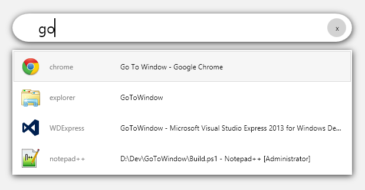

Go To Window
**Warning! This is an alpha, and is known to sometimes not get the focus, which makes it not yet usable for day-to-day use.**
No more need for alt-tabbing through dozens of windows, or looking for your windows in the task bar. Simply press `Alt` + `Tab`, type a few characters from the window title or process name you want to switch to and press enter.
For the keyboard maniacs.

## Usage
Launch `GoToWindow.exe`. You can also place it in in the Windows Startup menu to launch it automatically with Windows.
* Press `Alt` + `Tab` + `Tab` to open the windows list. All windows are shown, with the most recently accessed first.
* Press the `Up` and `Down` arrows to navigate in the list, and press `Enter` to switch to the application.
* Start typing keywords to filter the list. Note that only windows that contain all words in either the window title _or_ the process name will be shown.
* If no opened window is found for your query, press `Enter` to search directly in the Windows Search charm.
* Press `Ctrl` + `Number (1 - 9)` to directly open the application at the selected index from the list.
* Press `Escape` to close the window.
## Tips and gotchas
* To use GoToWindow within an application that runs with elevated privileges (Run as Administrator), GoToWindow must also run with elevated privileges, otherwise the native `Alt` + `Tab` will show up.
* By default, GoToWindow expands web browser's tabs. This slows down display a little bit. You can disable it in the Settings, under the Plugins tab.
### Built-in Plugins
* `GoToWindow.Plugins.Core`: Loads the core windows list, as shown by the native `Alt` + `Tab` screen. Also allows launching the Windows Search if no window fit.
* `GoToWindow.Plugins.ExpandBrowsersTabs`: Expands browser windows and shows all tabs as separate windows. Includes Chrome, Firefox, Internet Explorer and Notepad++
* `GoToWindow.Plugins.ExplorerExtensions`: Show the full path of explorer windows instead of just the folder name. If a valid path is written, you can also open Windows Explorer with it.